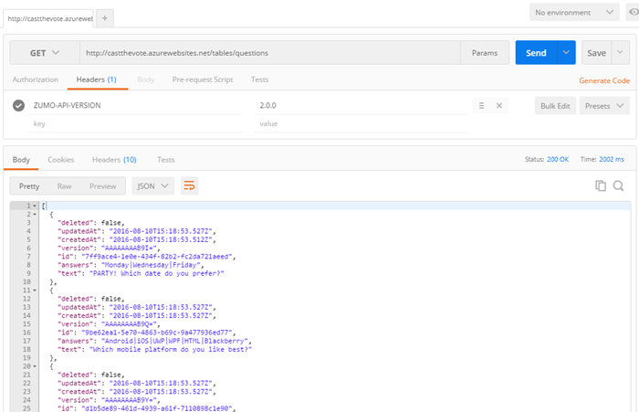

Duration
5 minutes
Goals
In this lab exercise, you will add a new Easy Table to your mobile application using the "Add from CSV" option in the Azure portal. This exercise can only be done if you used the portal to create your service (e.g. Node.js). If you are using an ASP.NET back end, then you need to use these instructions instead.
Assets
The provided Exercise 4 folder contains a questions.csv file which has the data you will be importing into Azure.
Challenge
You will need to create a new Easy Table named questions to hold the questions users can response to. It cam be created and populated through an existing questions.csv file in the materials folder using the Add CSV functionality in the Easy Table blade. There are two columns which will be created:
| Columnn Name | Type |
|---|---|
| text | String |
| answers | String |
Once you have created the table, you should be able to hit the /tables/questions endpoint and see data from your service!
If you need some guidance, you can use the step-by-step instructions below.
Steps
Import the questions.csv file
- Open a browser window and login to the Azure management portal with your account.
- Go to the mobile app service you created in the prior exercise.
- Scroll down through the actions blade and locate the Mobile section. Click on the Easy tables item.
- Click the Add from CSV toolbar button in the Easy table blade.
- Point the blade at the questions.csv file in the Exercise 4 folder included with these lab materials.
- You can open the file with a text editor to see the data that will be imported.
- It has two columns - text and answers.
- You can add additional questions/answers if you want to see different data.
- Both of the columns can be left as
Stringvalues; click Start Upload to import the data. - Once it's imported, you can check the data by clicking on the questions table in the Easy Table blade.
Check your table endpoint (Optional)
Adding the table also created a new endpoint: <URL>/tables/questions which you can check with your REST client. Remember to add the ZUMO-API-VERSION header value.
Summary
In this exercise, you added a new Easy Table with pre-supplied data to your service using the Azure portal.